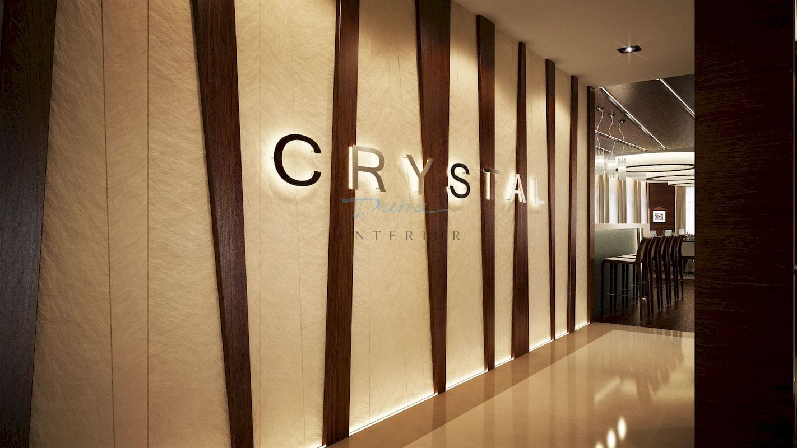
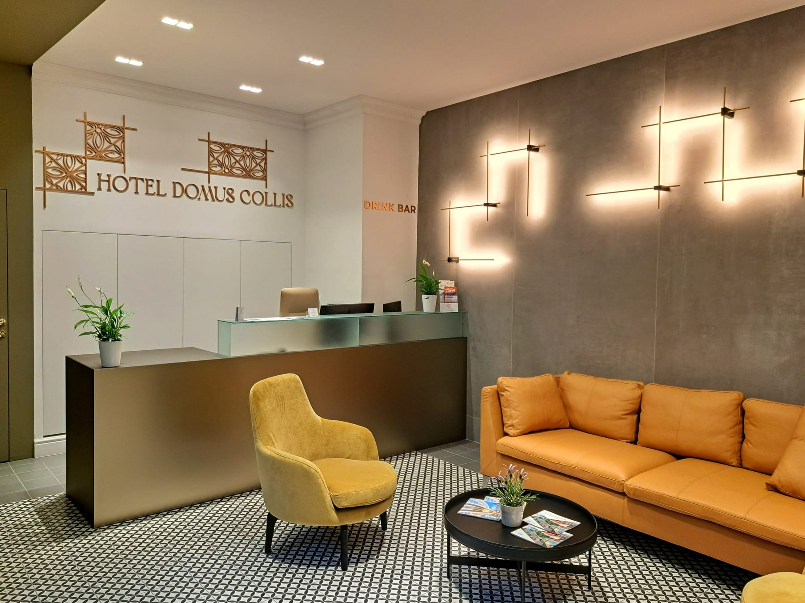
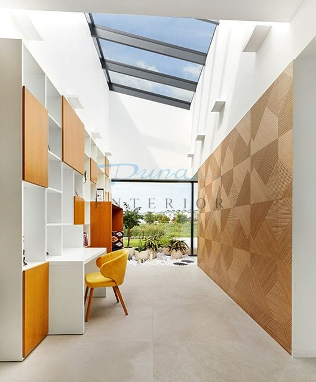

Asztalosipar
Egyedi bútor
Bútorasztalos és épületasztalos termékek tervezése és gyártása, felületkezeléssel, saját üzemben.
Asztalos és hajóépítő üzem · Győr
A tervezéstől a kivitelezésig egy kézben: saját gyártókapacitás, szerelőcsapatok és belsőépítész-tervezői háttér.



Bútor · Belsőépítészet · Hajó
Tevékenység
Asztalosipar
Bútorasztalos és épületasztalos termékek tervezése és gyártása, felületkezeléssel, saját üzemben.
Belsőépítészet
Létesítmények komplett berendezése: kiviteli tervdokumentáció, gyártás, helyszínre szállítás és szakszerű szerelés.
Hajógyártás
Szabadidős és sporthajók tervezése és gyártása, hajók javítása, felújítása és átalakítása.
A folyamat
01 — Igényfelmérés
Felmérjük a helyszínt és az elképzelést. Innen indul minden méret, ami később a gépre kerül.
02 — Tervezés
Belsőépítész-tervezői háttérrel készül a teljes kiviteli tervdokumentáció, látványtervvel együtt.
03 — Gyártás
Győri üzemünkben gyalulás, kontaktcsiszolás, korszerű gépsor — a bútor nálunk születik meg.
04 — Felület
A fa akkor lesz kész, amikor a felülete is: pácolás, lakkozás, saját felületkezelő részlegben.
05 — Szerelés
Szállítás és szakszerű szerelés saját csapatokkal. Az átadás nem a vég, hanem a kapcsolat kezdete.
Referenciák
Duna Design Manufaktúra
Különleges bútorok, egyedi használati tárgyak, hajóátalakítások — ott, ahol a hagyományos asztalosipar véget ér.